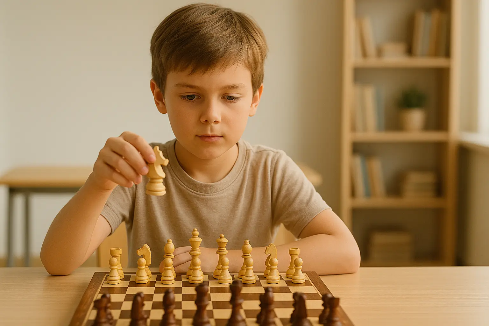

Vous venez de découvrir les échecs. Peut-être après avoir vu une série, joué avec un ami, ou simplement par curiosité. Et maintenant, vous vous demandez : "Par où je commence ?"
Bonne nouvelle : vous êtes au bon endroit. Après 3 ans à enseigner les échecs à des débutants complets, j'ai compris une chose : il ne faut pas tout apprendre d'un coup. Il faut y aller progressivement, étape par étape.
Dans ce guide, je vais vous accompagner de 0 à 500 Elo. Pas de jargon compliqué, pas de variantes incompréhensibles. Juste l'essentiel pour commencer à gagner vos premières parties.
Vous hésitez encore entre apprendre seul ou avec un accompagnement ? Lisez d'abord notre comparatif professeur ou autodidacte aux échecs. Ce que vous allez apprendre :
- Les règles essentielles (pas toutes, juste celles qui comptent vraiment)
- Les 3 principes d'ouverture qui changent tout
- Les 5 motifs tactiques de base à reconnaître
- Comment éviter les pièges classiques
- Un plan d'entraînement concret pour atteindre 500 Elo
Combien de temps prévoir ? Le rythme dépend de votre point de départ et de votre pratique. Les étapes ci-dessous sont des repères pédagogiques, sans délai garanti. Pour une vision plus large de la progression, consultez notre article combien de temps faut-il pour devenir bon aux échecs.
Quel classement vise ce guide ? « De zéro à 500 » désigne ici les premiers pas sur une plateforme en ligne, notamment Chess.com. Zéro signifie débutant complet, pas un classement officiel. Les classements Chess.com, Lichess et FIDE ne sont pas interchangeables : comparez vos résultats sur le même site et à la même cadence. Consultez notre explication des classements Elo.

1. Niveau 0 : Vous connaissez les règles de base
Vous découvrez tout juste le jeu ? Commencez par apprendre à jouer aux échecs avec le guide PDF pour débutant absolu, puis revenez à ce programme une fois vos premiers repères acquis.
Avant de commencer, assurons-nous que vous connaissez l'essentiel. Je ne vais pas détailler toutes les règles ici (il existe des tonnes de ressources pour ça), mais voici les points critiques que beaucoup de débutants oublient :
Les règles qu'on oublie toujours
Le roque
Conditions :
- Ni le roi ni la tour n'ont bougé
- Aucune pièce entre les deux
- Le roi ne traverse pas une case attaquée
- Le roi n'est pas en échec
Erreur fréquente : Roquer alors que le roi est "passé" par une case attaquée.
La prise en passant
Si un pion adverse avance de 2 cases et se retrouve à côté de votre pion, vous pouvez le capturer "en passant".
Important : Ça ne marche QUE au coup suivant. Après, c'est trop tard.
Fréquence : Rare, mais arrive 1-2 fois par partie en moyenne.
La promotion du pion
Un pion qui arrive en fin de rangée devient n'importe quelle pièce (sauf roi).
Le choix habituel : choisissez une dame, après avoir vérifié que cela ne provoque pas un pat.
Astuce : Vous POUVEZ avoir 2 dames (ou plus) en même temps.
Pat = Nulle (pas victoire)
Si votre adversaire n'a aucun coup légal MAIS n'est pas en échec, c'est pat (partie nulle).
Erreur classique : Avoir la dame et le roi contre un roi seul, et faire pat au lieu de mater.
Test rapide : Êtes-vous prêt ?
Répondez à ces questions :
- Savez-vous comment chaque pièce se déplace ?
- Savez-vous ce qu'est un échec ? Un mat ?
- Savez-vous roquer (petit et grand roque) ?
- Connaissez-vous la valeur relative des pièces (pion = 1, cavalier = 3, fou = 3, tour = 5, dame = 9) ?
Si oui → Passez à la section suivante.
Si non → Apprenez d'abord les règles (Chess.com a un excellent tutoriel interactif gratuit).
2. Niveau 0-100 Elo : Arrêter de perdre bêtement
À ce stade, vous ne savez pas encore gagner. Mais vous pouvez déjà apprendre à ne pas perdre bêtement. C'est la base.
Règle n°1 : Protégez vos pièces
L'erreur n°1 des débutants : Laisser des pièces non protégées.
La règle d'or (niveau débutant)
Avant chaque coup, demandez-vous :
- "Mon adversaire peut-il prendre une de mes pièces gratuitement ?"
- "Si je joue ce coup, est-ce que je laisse une pièce en prise ?"
Ces 2 questions sont, à elles seules, ce qui fera la plus grosse différence sur vos résultats à ce niveau.
Règle n°2 : Prenez les pièces gratuites
Ça paraît évident, mais beaucoup de débutants ne voient pas les pièces gratuites.
Entraînement : Avant de jouer, scannez l'échiquier et demandez-vous : "Y a-t-il une pièce adverse non protégée que je peux prendre ?"
Règle n°3 : Ne sortez pas la dame trop tôt
Piège classique du débutant : Sortir la dame dès les premiers coups pour "attaquer".
Problème : Votre adversaire va développer ses pièces EN ATTAQUANT votre dame. Vous allez perdre du temps à la bouger sans arrêt.
Règle de survie
Ne sortez votre dame QUE quand :
- Vous avez déjà développé vos cavaliers et fous
- Vous avez roqué
- Vous voyez une attaque concrète qui gagne du matériel
Résumé niveau 0-100 Elo
| À faire | À éviter |
|---|---|
| Protéger toutes vos pièces | Laisser des pièces en prise |
| Prendre les pièces gratuites | Ignorer les coups de l'adversaire |
| Développer cavaliers et fous | Sortir la dame trop tôt |
| Roquer rapidement (coups 8-12) | Laisser le roi au centre |
| Réfléchir 10-15 secondes par coup | Jouer trop vite sans vérifier |
3. Niveau 100-300 Elo : Les 3 principes d'ouverture
Maintenant que vous savez ne pas perdre bêtement, passons aux fondamentaux.
Les 3 principes d'ouverture (à appliquer TOUJOURS)
1. Contrôler le centre
Les cases e4, d4, e5, d5 sont les plus importantes de l'échiquier.
Pourquoi : Une pièce au centre contrôle plus de cases qu'une pièce sur le bord.
Comment : Avancez vos pions e et d (1.e4 ou 1.d4), développez cavaliers et fous vers le centre.
2. Développer vos pièces
Sortez vos cavaliers et fous rapidement (coups 2-6).
Ordre recommandé :
- Avancer pion central (e4 ou d4)
- Cavalier (Cf3 ou Cc3)
- Fou (Fc4 ou Ff4)
- Deuxième cavalier
- Deuxième fou
- Roque (coups 8-12)
3. Mettre le roi en sécurité (roque)
Le roque accomplit 2 choses :
- Met le roi à l'abri
- Active la tour
Objectif : Roquer avant le coup 12.
Astuce : le petit roque (0-0) demande de libérer moins de cases que le grand roque (0-0-0). Choisissez surtout le côté où votre roi sera en sécurité.
Bonus : Ne bougez pas 2 fois la même pièce
Sauf si vous gagnez du matériel ou évitez de perdre une pièce.
Exemple de mauvais coup : Jouer Cc3 puis Cb1 puis Cd2. Vous avez perdu 3 coups pour rien.
La checklist des 10 premiers coups
Après 10 coups, vous devriez avoir :
- ✓ 2 pions centraux avancés (e4 + d3, ou d4 + e3, etc.)
- ✓ 2 cavaliers développés
- ✓ 2 fous développés
- ✓ Roqué (ou prêt à roquer)
- ✓ Aucune pièce en prise
Ces réflexes vous aident à développer vos pièces et à protéger votre roi.
4. Niveau 300-500 Elo : Maîtriser les tactiques de base
Vous connaissez les principes d'ouverture. Maintenant, il faut apprendre à gagner du matériel et à mater. C'est là qu'interviennent les tactiques.
Les 5 tactiques essentielles (niveau débutant)
1. La fourchette (fork)
Définition : Attaquer 2 pièces en même temps avec une seule pièce.
Exemple classique : Cavalier en e4 qui attaque le roi en g5 et la tour en c3.
Comment la repérer : Cherchez des cases où votre cavalier/pion/dame peut attaquer 2 pièces.
Fréquence : 2-3 fois par partie. C'est LA tactique la plus courante.
2. Le clouage (pin)
Définition : Une pièce ne peut pas bouger car elle protège une pièce plus importante derrière elle.
Exemple : Fou en g5 qui cloue le cavalier f6 (si le cavalier bouge, le roi en e8 est en échec).
Comment l'utiliser : Alignez fou/dame/tour avec une pièce adverse + le roi/la dame derrière.
Astuce : Une pièce clouée = une pièce morte (elle ne peut rien faire).
3. L'attaque double (double attack)
Définition : Similaire à la fourchette, mais avec n'importe quelle pièce.
Exemple : Dame en d4 qui attaque la tour en a1 ET le fou en h8.
Comment la créer : Cherchez des pièces adverses non alignées sur la même diagonale/colonne/rangée.
4. L'échec à la découverte (discovered check)
Définition : Vous bougez une pièce, et une autre pièce derrière donne échec.
Exemple : Fou en e4, tour en e1, roi noir en e8. Vous bougez le fou → la tour donne échec.
Puissance : TRÈS fort car la pièce qui bouge peut prendre n'importe quoi gratuitement (l'adversaire doit parer l'échec).
5. Le mat du couloir (back rank mate)
Définition : Mat avec tour/dame sur la dernière rangée, quand le roi est bloqué par ses propres pions.
Exemple : Roi noir en g8, pions en f7/g7/h7, tour blanche en d8 = mat.
Comment l'éviter : Créez une "porte de sortie" pour votre roi (avancez le pion h ou f).
Fréquence : 1 partie sur 3 se termine comme ça au niveau débutant.
Comment s'entraîner aux tactiques
Pour essayer avant de choisir une plateforme, résolvez nos cinq exercices d'échecs pour débutants avec corrections. Ils permettent de vérifier les captures, les réponses à l'échec et les premiers motifs tactiques.
Méthode progressive
Semaine 1-2 : Faites 10 puzzles "fourchette" sur Chess.com/Lichess
Semaine 3-4 : Faites 10 puzzles "clouage"
Semaine 5-6 : Mix de fourchettes + clouages
Semaine 7-8 : Ajoutez les attaques doubles et découvertes
Pas encore de compte sur une plateforme ? Commencez par notre guide jouer aux échecs en ligne : choix du site, cadence adaptée aux débutants et paramètres à connaître.
Après 2 mois : Mode "puzzle du jour" (5-10 puzzles/jour, tous types mélangés)
5. Quelles ouvertures apprendre quand on débute ?
Bonne nouvelle : Vous n'avez pas besoin de connaître 50 ouvertures. voici trois exemples pour comprendre les principes, sans garantie de classement.
1. Ouverture italienne (avec les blancs)
Coups de base
- 1.e4 e5
- 2.Cf3 Cc6
- 3.Fc4 (ouverture italienne)
Idée : Contrôle du centre, développement rapide, pression sur f7 (point faible des noirs).
Plan : d3, Cc3, 0-0, puis attaquer ou échanger au centre.
Pourquoi c'est simple : Principes naturels, peu de théorie, fonctionne contre tout.
2. Ouverture de Londres (avec les blancs)
Coups de base
- 1.d4 (n'importe quelle réponse noire)
- 2.Ff4 (système de Londres)
- 3.e3, Cf3, Cbd2, c3, Fd3, 0-0
Idée : Développement solide, peu importe ce que jouent les noirs.
Plan : Structure solide, puis attaque sur le roque adverse ou jeu au centre.
Pourquoi c'est simple : Vous jouez les MÊMES coups contre toutes les défenses noires.
3. Défense française (avec les noirs contre 1.e4)
Coups de base
- 1.e4 e6
- 2.d4 d5
- 3.(n'importe) ...c5 (contre-attaquer le centre)
Idée : Bloquer le centre, puis contre-attaquer.
Plan : ...Cc6, ...Cf6, ...cxd4, développer les pièces.
Pourquoi c'est simple : Structure solide, difficile à casser pour les débutants blancs.
Conseil d'apprentissage
Ne cherchez pas à mémoriser 20 coups.
Apprenez juste :
- Les 5-6 premiers coups de chaque ouverture
- L'idée générale (contrôle centre, développement, roque)
- Un plan typique (où mettre mes pièces)
Le reste viendra avec l'expérience.
6. Finales essentielles : mat roi + dame vs roi
Pour visualiser les positions avant et après le mat, consultez notre guide des finales de base avec diagrammes et PDF. Vous y trouverez aussi le mat avec une tour, l'opposition et le piège du pat.
La finale la plus importante à connaître : Mater avec roi + dame contre roi seul.
Si vous ne savez pas faire ça, vous allez faire pat et perdre des parties gagnées. C'est la finale n°1 à maîtriser.
Méthode simple en 3 étapes
Étape 1 : Réduire l'espace du roi adverse
Utilisez votre dame pour créer une "barrière" que le roi adverse ne peut pas franchir.
Exemple : Dame en d4 → Le roi noir ne peut plus aller sur la moitié sud de l'échiquier.
Conseil : Gardez toujours 1-2 cases entre la dame et le roi adverse (pour éviter qu'il la prenne).
Étape 2 : Avancer votre roi
Amenez votre roi pour aider la dame.
Objectif : Votre roi doit se rapprocher du roi adverse.
Distance idéale : 2-3 cases du roi adverse (c'est ce qu'on appelle "l'opposition").
Étape 3 : Pousser le roi adverse sur le bord
Une fois le roi adverse sur la rangée 1 ou 8 (ou colonne a/h), faites le mat.
Position finale type :
- Roi noir en a8
- Roi blanc en b6
- Dame blanche en a7 ou b7 = mat
Attention au pat
Erreur classique : Donner échec sans arrêt avec la dame, et accidentellement bloquer toutes les cases du roi → pat.
Règle d'or : Avant de jouer, vérifiez que le roi adverse a AU MOINS une case légale (même si vous la contrôlez).
Entraînement
Allez sur Chess.com ou Lichess → Apprendre → Finales → "Roi + Dame vs Roi"
Objectif : Être capable de mater en moins de 10 coups à chaque fois.
Temps nécessaire : 15-30 minutes de pratique.
7. Les 5 erreurs qui bloquent les débutants
Après 3 ans à enseigner, j'ai identifié les erreurs récurrentes qui empêchent les débutants de progresser. Pour une liste exhaustive, consultez notre article sur les 10 erreurs de débutant aux échecs et comment les éviter.
Erreur 1 : Jouer trop vite
Symptôme : Vous jouez en 2-3 secondes sans réfléchir.
Conséquence : Vous laissez des pièces en prise, vous ratez des tactiques évidentes.
Solution : Imposez-vous une règle : minimum 10 secondes par coup. Vérifiez toujours les menaces adverses et vos pièces en prise.
Erreur 2 : Jouer uniquement en blitz
Symptôme : Vous ne jouez qu'en 3+0 ou 5+0.
Conséquence : Vous ne progressez pas, vous répétez les mêmes erreurs.
Solution : Jouez en 15+10 minimum. Le blitz, c'est pour s'amuser, pas pour progresser au niveau débutant.
Erreur 3 : Ne jamais analyser ses parties
Symptôme : Vous jouez 10 parties, vous perdez 7 fois, vous ne comprenez pas pourquoi.
Conséquence : Vous répétez les mêmes erreurs indéfiniment.
Solution : Après chaque défaite, utilisez l'analyse de Chess.com/Lichess. Regardez les "erreurs" et "boulettes". Comprenez POURQUOI vous avez perdu.
Erreur 4 : Vouloir apprendre trop d'ouvertures
Symptôme : Vous essayez de jouer l'Espagnole, la Sicilienne, le Gambit Dame, la Française... et vous mélangez tout.
Conséquence : Vous ne maîtrisez aucune ouverture correctement.
Solution : Choisissez 1 ouverture avec les blancs, 1 contre 1.e4, 1 contre 1.d4. Point. Jouez-les pendant 3 mois MINIMUM.
Erreur 5 : Négliger les tactiques
Symptôme : Vous perdez parce que vous ratez des fourchettes, clouages, mats en 1-2 coups.
Conséquence : Vous perdez des parties gagnées.
Solution : 10 puzzles par jour, non négociable. C'est l'exercice qui fait progresser le plus vite au niveau débutant.

8. Comment s'entraîner quand on est débutant ? (30 min/jour)
Vous avez 30 minutes par jour ? Voici comment les utiliser intelligemment.
Une séance d'étude de 30 minutes
Une partie en 15+10 donne à chaque joueur 15 minutes, plus 10 secondes par coup joué. Sa durée totale peut dépasser 30 minutes. Prévoyez un créneau distinct pour jouer et gardez du temps pour l'analyse.
| Activité | Temps | Pourquoi |
|---|---|---|
| Puzzles tactiques | 10 min | Entraîne la reconnaissance des menaces et des motifs tactiques |
| Revoir une partie déjà jouée | 15 min | Cherchez une meilleure décision dans une position critique |
| Bilan écrit | 5 min | Identifie 1-2 erreurs de la partie, comprend pourquoi vous avez perdu/gagné |
Exemple de programme sur 3 mois, à adapter
Mois 1 : Les bases
- Semaine 1-2 : Principes d'ouverture (centre, développement, roque)
- Semaine 3-4 : Tactique = fourchettes + clouages uniquement
- Parties : prévoyez un créneau séparé pour jouer en 15+10
- Objectif : vérifier les pièces menacées avant de jouer
Mois 2 : Consolidation
- Semaine 5-6 : Apprendre 1 ouverture simple (Italien ou Londres)
- Semaine 7-8 : Tactiques = attaques doubles + découvertes
- Parties : jouez en 15+10 quand votre temps disponible le permet
- Objectif : reconnaître fourchettes et clouages
Mois 3 : Perfectionnement
- Semaine 9-10 : Finale roi + dame vs roi (maîtriser parfaitement)
- Semaine 11-12 : Mix de toutes les tactiques
- Parties : alternez parties en 15+10 et séances d’analyse
- Objectif : réussir le mat avec roi et dame contre roi
Après 3 mois : Continuité
- Maintenez une routine compatible avec vos disponibilités
- Commencez à apprendre de nouvelles ouvertures
- Étudiez des parties de maîtres commentées
- Objectif : réduire les erreurs récurrentes dans vos parties
Évaluer les progrès au-delà du classement
Il n'existe pas de seuil universel de 100 parties qui stabilise votre niveau. Notez une erreur récurrente, travaillez-la, puis vérifiez si elle revient moins souvent dans vos parties suivantes. La progression peut être irrégulière.
9. Ressources gratuites pour progresser
Voici les outils que je recommande à tous mes élèves débutants.
Matériel
Avant de jouer en ligne, procurez-vous un bon échiquier physique — manipuler les pièces aide énormément à mémoriser. Consultez notre comparatif des meilleurs échiquiers pliables pour choisir le vôtre.
Plateformes de jeu
Chess.com (Freemium)
Points forts :
- Interface ultra intuitive
- Puzzles quotidiens gratuits
- Leçons interactives pour débutants
- Analyse basique gratuite (limitée)
Gratuit : Largement suffisant pour 0-500 Elo
Lichess (100% gratuit)
Points forts :
- Totalement gratuit, sans pub
- Analyse illimitée avec Stockfish
- Puzzles illimités
- Mode "Apprendre" très complet
Idéal si : Vous voulez tout gratuit
Chaînes YouTube (en français)
- Échecs & Stratégie : Tutoriels débutants clairs
- Blitzstream : Parties commentées accessibles
- Kevin Bordi : Contenu pédagogique, fun et accessible
Livres (optionnels)
- "Les échecs pour les nuls" - James Eade : Parfait pour débuter
- "1001 mats élémentaires" - Pour s'entraîner aux finales
Mon conseil
Ne vous dispersez pas. Choisissez UNE plateforme (Chess.com ou Lichess), UNE chaîne YouTube, et concentrez-vous sur la pratique.
80% de votre temps = jouer et analyser.
20% de votre temps = apprendre (vidéos, leçons).
Conclusion : Vous avez tout pour réussir
Récapitulons ce que vous venez d'apprendre :
- Les règles essentielles (roque, prise en passant, pat)
- Comment arrêter de perdre bêtement (protéger vos pièces)
- Les 3 principes d'ouverture (centre, développement, roque)
- Les 5 tactiques de base (fourchette, clouage, attaque double, découverte, mat du couloir)
- 3 ouvertures simples (Italien, Londres, Française)
- Comment mater avec roi + dame vs roi
- Les erreurs à éviter
- Un plan d'entraînement concret sur 3 mois
Ce guide vous donne un parcours pour construire vos premiers réflexes.
Mes 3 conseils finaux
1. Soyez patient. La progression prend du temps. Vous allez perdre des parties. C'est normal. Chaque défaite est une leçon.
2. Jouez lentement. Pas de blitz avant 500 Elo. Prenez le temps de réfléchir. 15+10 minimum.
3. Analysez vos parties. C'est LA clé de la progression. Relevez une erreur récurrente et cherchez comment l'éviter dans la prochaine partie.
Prenez l'habitude d'analyser vos erreurs et de pratiquer régulièrement. Choisissez des séances compatibles avec votre emploi du temps et ajustez leur contenu à vos difficultés.
Envie de progresser plus vite ?
Je propose un premier cours offert — à domicile à Paris ou Versailles (50€/h ensuite) ou en visio partout en France (40€/h). Évaluation du niveau et plan de progression personnalisé.
Réserver le cours offertTout ce plan dans un seul guide
Envie de l'avoir sous la main, structuré et illustré ?
📕 Le guide « Apprendre les Échecs » — 96 pages, gratuit Des règles du jeu à votre premier tournoi : ouverture, tactique, finales et exercices corrigés →Article recommandé
Maintenant que vous connaissez les bases, découvrez les erreurs classiques à éviter :
10 Erreurs de Débutant aux Échecs (et Comment les Éviter) Checklist complète avec solutions concrètes pour progresser rapidement → Les Règles des Échecs, Expliquées pour les Débutants Un doute sur le roque ou la prise en passant ? Un diagramme pour chaque règle →
Article rédigé par Nicolas Musicki, professeur d'échecs à Paris et Versailles
Retour à l'accueil |
Me contacter
Questions fréquentes
Combien de temps faut-il pour atteindre 500 Elo aux échecs ?
Il n'existe pas de délai garanti pour atteindre 500 sur une plateforme en ligne. Le point de départ, la cadence et la régularité comptent. Suivez vos progrès sur la même plateforme et vérifiez aussi si vous laissez moins de pièces en prise.
Quelles ouvertures apprendre quand on débute aux échecs ?
Commencez par le contrôle du centre, le développement des pièces et la sécurité du roi. L'Italienne, le système de Londres et la défense française sont des exemples à étudier pour leurs idées, pas un répertoire à mémoriser obligatoirement pour atteindre 500.
Comment s'entraîner aux échecs quand on est débutant ?
Pour une séance de 30 minutes, faites 10 minutes de tactique, 15 minutes d'analyse d'une partie déjà jouée et 5 minutes de bilan. Prévoyez un créneau séparé pour jouer en 15+10 : chaque joueur dispose de 15 minutes et reçoit 10 secondes par coup, donc la partie peut dépasser 30 minutes.